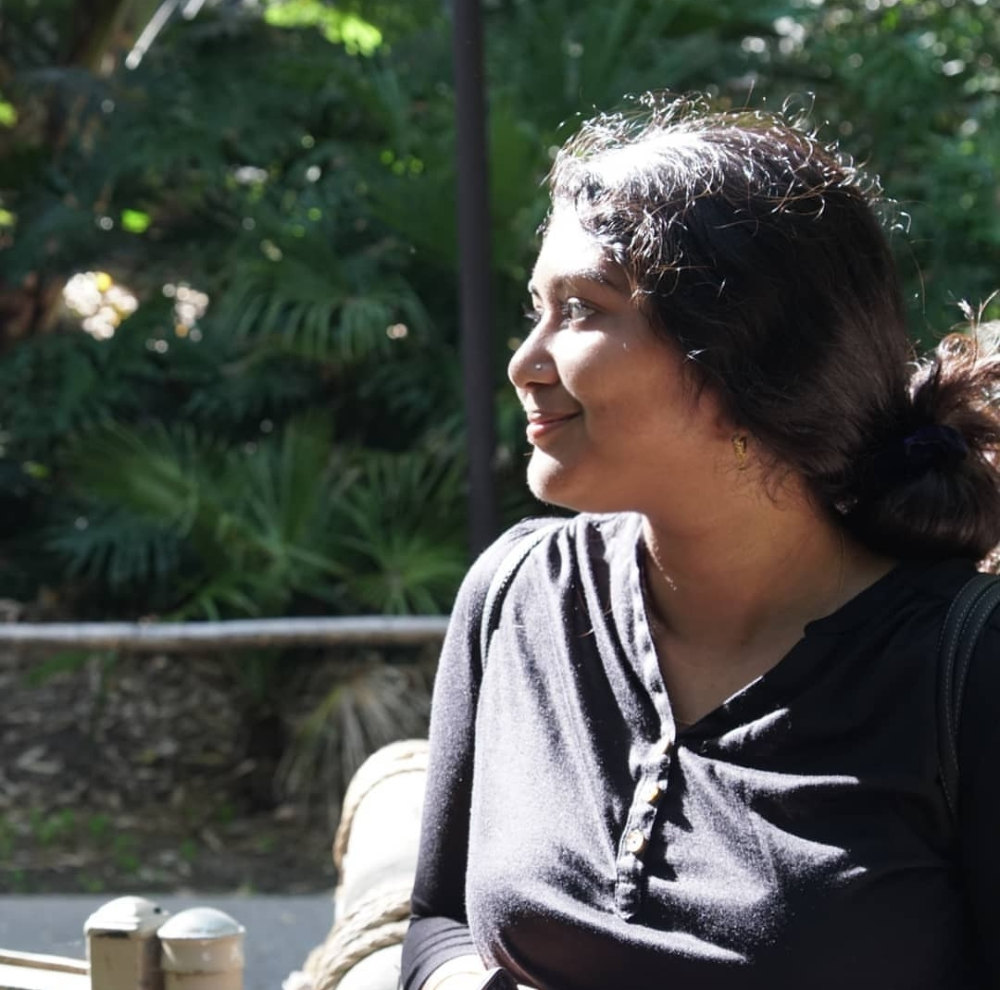

About Festive Flavors
Ishita SrivastavaGreeting fellow foodies! Festive Flavors is a visually appealing storytelling of traditional forgotten recipes of India with some modern recipes in an easy to cook step by step process so that a new cook can learn how to cook and an experienced cook can have fun watching them. This channel was started for the love of food, which I have learned from my Mother & Grandmother (Paternal Maternal) and they learned from their Mothers, and also over the years, my Mother developed new techniques which have been passed on to me. Another reason for starting this channel is that I love photography and videography. I thought, why not put it all together and start a food channel. Subscribe to the channel to receive new recipe updates. If you like the recipe please give us a thumbs up. I hope you will try the recipes and have fun as much as we had making them.
- Collaborators, please contact festive@idigitalstock.com
- For videos and Photography visit- www.idigitalstock.com
- Festive Flavors is a part of iDigitalStock.com
My name is Ishita Srivastava, and I'm the writer for this blog dedicated to my mom's youtube channel. I wanted to create this blog as a readable space for fellow foodies to come and read home recipes, as we don't always have the time in our busy days to watch videos. Here, pages can be bookmarked, and later referenced in the videos!
I'm a junior at Michigan State University with a major in Media and Information, and a minor in Information Technology.
Listed below are some of my hobbies:
- Reading
- Playing Piano
- Painting
- Cooking